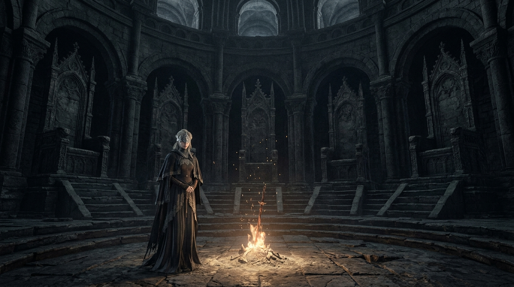

分幕章节跳转 (Click to Seek)

⏱️ 00:18 – 00:36
CHAPTER I / 第一章
王座空悬 · 诸王背誓
昔日传火诸王抛弃王座逃回故土，唯留放逐者鲁道斯与盲眼防火女。
五座王座
矮小鲁道斯
盲眼防火女

⏱️ 00:36 – 00:58
CHAPTER II / 第二章
诸王悲歌 · 逃离宿命
不死队骨肉相残、巨人尤姆心死如灰、埃尔德里奇吞噬众神、双王子厌恶轮回。
深渊监视者
巨人尤姆
深海时代
王室诅咒

⏱️ 00:58 – 01:16
CHAPTER III / 第三章
猎王之誓 · 柴薪共鸣
无火余灰斩杀传奇薪王，汇聚四大柴薪置于宝座，点燃通往最初火炉的通天烈焰。
灰烬猎王
王座仪式
初始火炉之门

⏱️ 01:16 – 01:37
CHAPTER IV / 第四章
终局之战 · 薪王化身
倾颓的火炉废墟，天际流血日蚀暗黑之环；万千传火者灵魂聚合体与凄凉钢琴绝唱。
流血暗日
薪王化身
葛温钢琴三连音

⏱️ 01:37 – 01:58
EPILOGUE / 终章
火的归宿 · 熄灭初火
防火女双手捧起微弱萤火，世界迎来静谧安详的黑暗；黑暗尽头，微火必将新生。
初火终熄
静谧黑暗
微火重燃
实时字幕对齐 (Interactive Transcript)
00:00
火渐熄，王不见王。
00:03
当最初的薪火再次衰微，洛斯里克的钟声响彻荒原。
00:08
那些曾经为了传火燃烧自身、却力有不逮化为尘埃的无火余灰，
00:13
自沉睡千年的墓穴中再次苏醒。
00:19
传火祭祀场中，高耸的五座王座如今大多空空如也。
00:23
为了维系濒临崩溃的世界，昔日薪王被钟声唤醒，
00:29
然而他们却选择背弃宿命，逃离传火的使命，回到了各自荒芜的故土。
00:37
法兰不死队在深渊的侵蚀中刀剑相向、自相残杀；
00:42
巨人尤姆在罪业之都的废墟中独守空亡与悲愿；
00:47
吞噬神明的埃尔德里奇狂热地追寻深海时代；
00:52
而洛斯里克双王子，则彻底厌倦了神权的诅咒与传火的荒诞轮回。
00:59
余灰虽被世人鄙夷为无火无光之物，却唯有他们踏上猎王之路。
01:04
斩杀薪王，集齐四大柴薪，置于祭祀场的王座之上。
01:09
当余火再度激荡，通往最初火炉的道路轰然开启。
01:17
在世界的尽头，天空悬挂着流淌着暗色余晖的暗黑之环。
01:22
最后的守门人——薪王们的化身，是千百年来所有传火者灵魂的聚合体。
01:28
当凄凉的钢琴三连音响起，无数宿命的悲壮在此刻交织碰撞。
01:37
初火终有熄灭的一天。
01:40
当防火女轻轻捧起那微弱如萤火的余烬，世界终于迎来了静谧的黑暗。
01:46
但正如她所言：在极其漫长的黑暗尽头，终会有一日，微小的火苗会再度诞生。
高精概念艺术画廊 (Artworks)
灰烬墓地 · 苏醒 SCENE 01
传火祭祀场 · 空座 SCENE 02
四大薪王 · 绝望 SCENE 03
薪柴归座 · 金火 SCENE 04
最初火炉 · 暗日 SCENE 05
熄灭初火 · 微光 SCENE 06
HYPERFRAME 视频工程技术体系
全片通过 HTML/CSS/GSAP 编排与无头浏览器 GPU 渲染合成
DOM & GSAP 动效
完全遵循 Hyperframe 逐帧时间线契约，100% 具备确定性与任意时间点 Seek 精度。
WCAG AA 对比度
全篇 124 处文本元素全部通过无障碍对比度合规测试，高透磨砂卡片阅读体验极佳。
多轨混音编排
视频包含人声解说轨、D 小调定制交响氛围轨与多处电影级重低音撞击转场音效。
1080P 硬件渲染
利用 Apple Metal 硬件 GPU 加速，3.5 分钟完成 3540 帧无损视频流抽取与 MP4 封装。